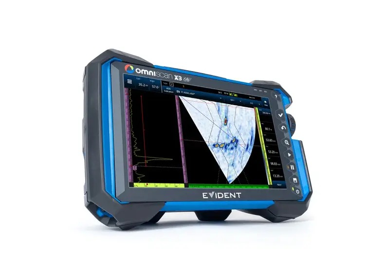
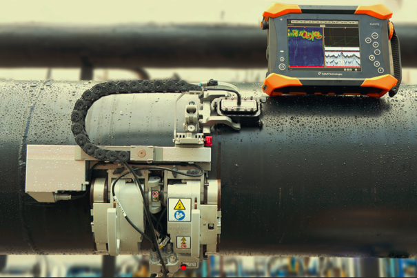
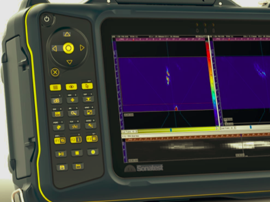
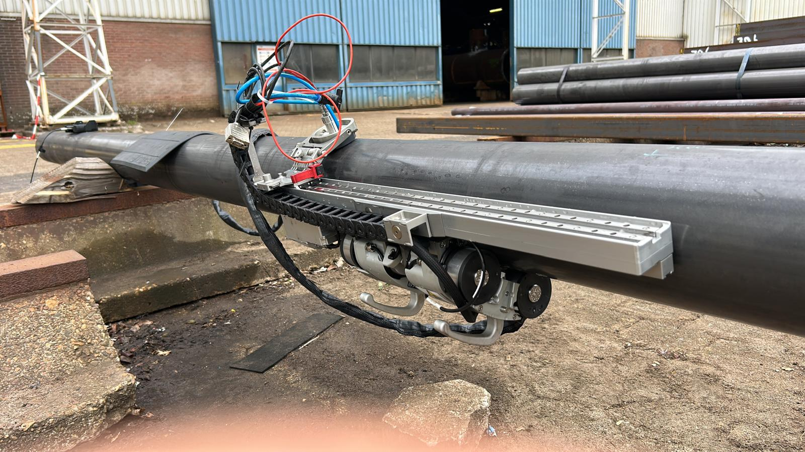
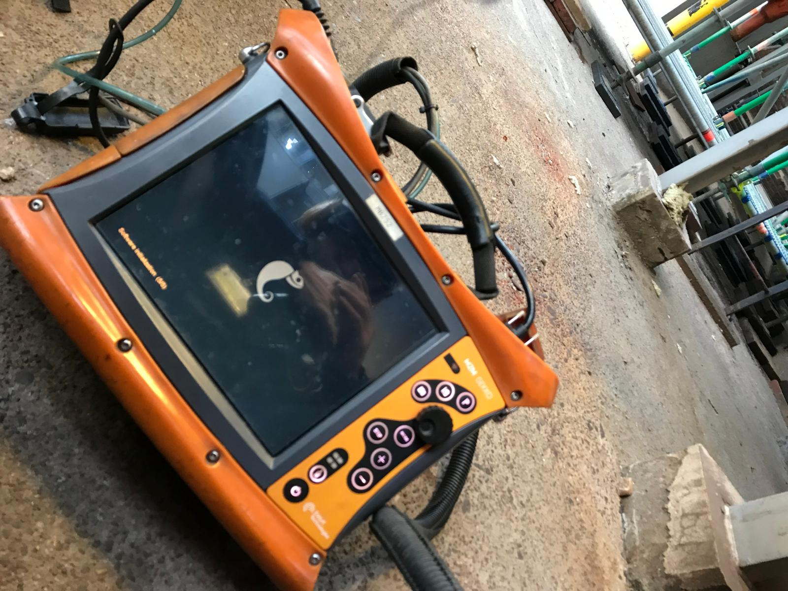
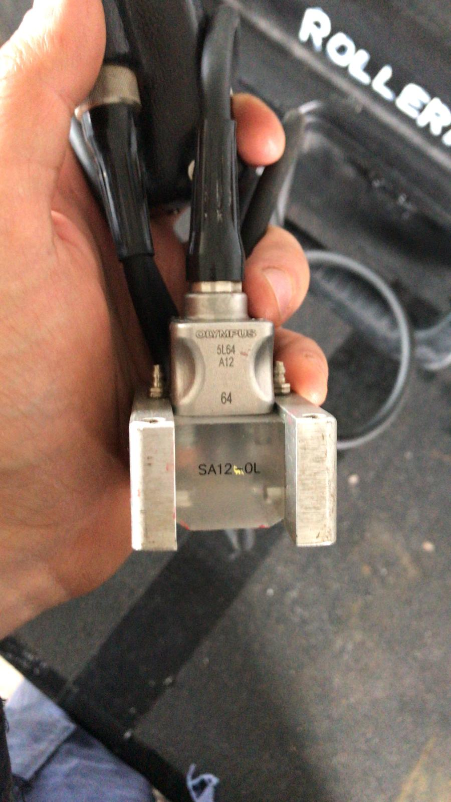
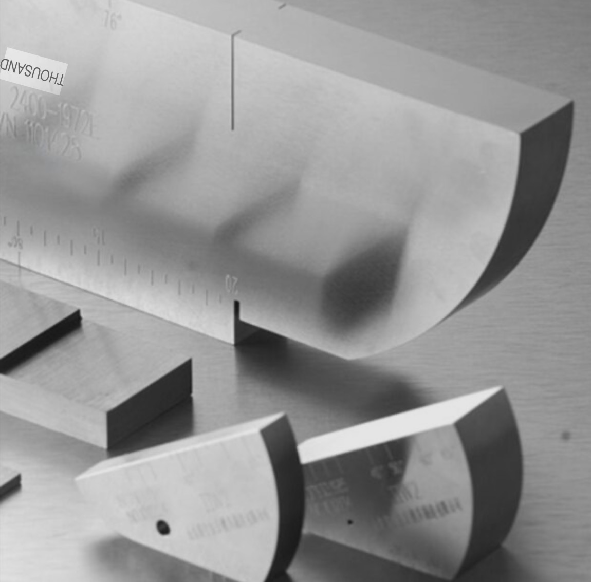
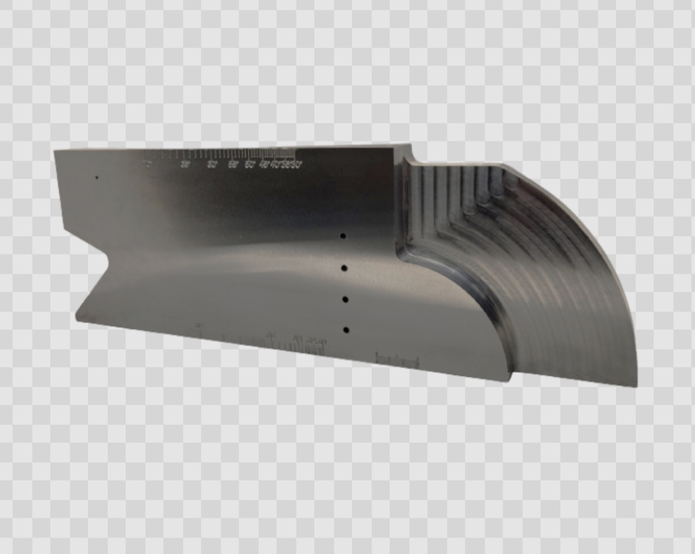
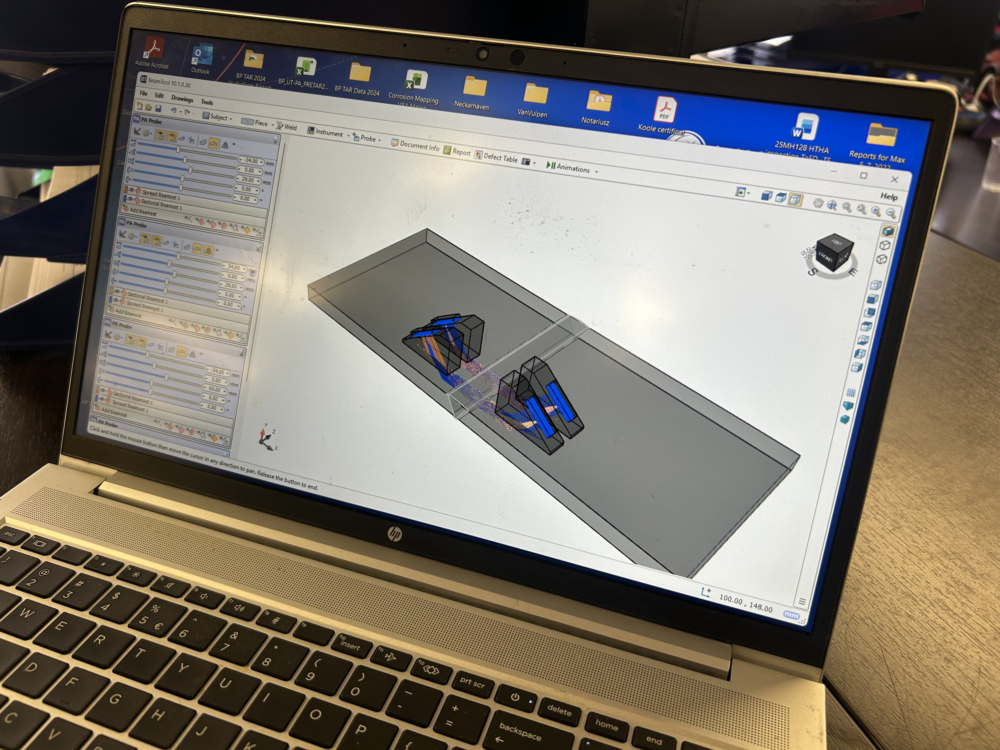
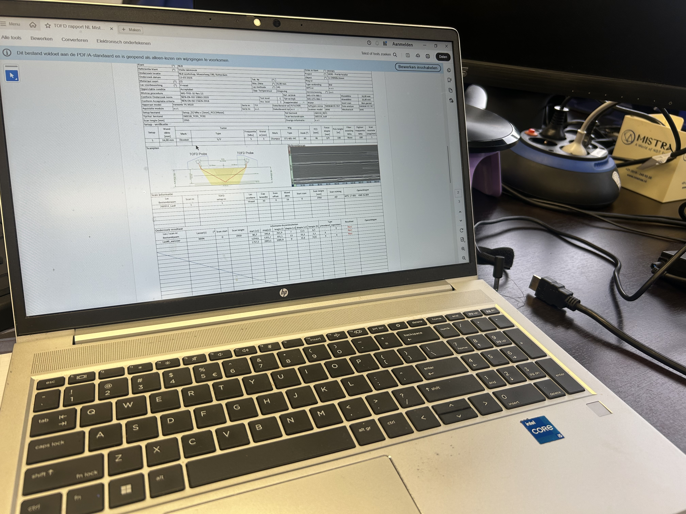

Advanced NDT inspection for critical assets and welded structures.
NDT@MK Solutions provides reliable non-destructive testing services for clients in Oil & Gas, petrochemical infrastructer, energy and heavy industry. The focus is on clear reporting, practical communication and high-quality inspections using advanced ultrasonic methods.
Independent inspection partner
NDT@MK Solutions is operated by Maciej Kołek, delivering professional inspection support with a strong focus on advanced ultrasonic testing.
Services
Simple scope, professional presentation, strong first impression
Advanced NDT
Inspection services designed for critical welds and demanding industrial applications.
- Phased Array Ultrasonic Testing (PAUT)
- Time of Flight Diffraction (TOFD)
- Total Focusing Method (TFM) and Plane wave compound imaging(PCI)
Conventional NDT
Reliable inspections for structural assessment.
- Visual Testing (VT)
- Penetrant Testing (PT)
- Magnetic Particle Testing (MT)
- Ultrasonic Testing (UT)
Corrosion & Weld Evaluation
Practical inspection support for asset integrity and maintenance planning.
- Corrosion mapping
- Weld integrity inspection
- Critical area examination
Inspection methods
PAUT Phassed Array Ultrasonic Testing
Advanced ultrasonic inspection method that provides detailed coverage and improved characterization of welded joints and discontinuities.
- Excellent coverage of weld volume
- Strong support for flaw detection and evaluation
- Suitable for demanding industrial applications
TOFD
Highly effective detection and sizing method, often used as a complementary technique for critical weld inspection.
- Accurate through-wall sizing capability
- Efficient for critical weld examinations
- Fast data aquisition
UT
Conventional ultrasonic testing remains essential for flaw detections and wallthickness measurments. Practical on-site inspection work.
- Thickness / Corrosion measurments
- Weld inspection/li>
- Fast on-site evaluation
TFM
High-resolution imaging technique used to improve interpretation quality and support more detailed assessment where required.
- Enhanced image quality
- Improved characterization support
- Useful for complex inspection tasks
Equipment
Main system






- Olympus Evident
- Eddyfi Technologies
- Sonatest
- Advanced UT probes and accessories
Inspection essentials
- Calibration blocks
- Structured inspection setup
- Clear reporting and traceability




Typical projects
Professional examples without naming clients
Weld inspection
Support for critical welded joints during fabrication, shutdowns and maintenance activities.
Corrosion assessment
Thickness measurement and mapping for pipelines, vessels and industrial structures.
Integrity support
Inspection input that helps maintenance teams make safe and practical decisions.
About the company
Short, direct and credible
Independent NDT inspection services focused on advanced ultrasonic testing, weld integrity and corrosion evaluation. The goal is to deliver reliable results, practical communication and inspection support that clients can trust in real industrial conditions.
Contact
Only email and LinkedIn, exactly as requested
NDT@MK Solutions
Maciej Kołek
NDT Inspection Specialist
• Available across Belgium and the Netherlends
LinkedIn profile
What clients usually send
-
Access conditions / scope details
- Codes/Procedures
- Project location
- Material and thickness
- Inspection method required
- Timeframe or shutdown window